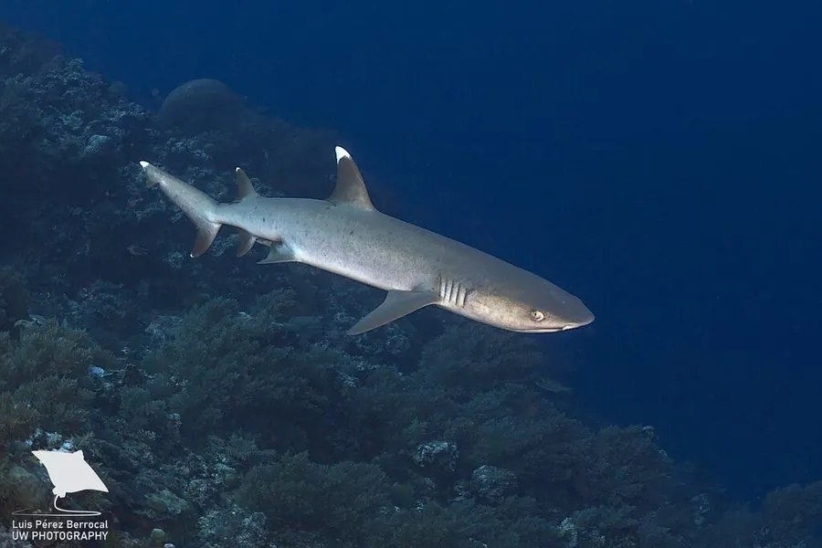

鱼类 · 动物界
白鳍礁鲨 Triaenodon obesus

体型细长的礁区鲨鱼，背鳍与尾鳍尖端雪白，白天常一动不动趴在礁洞或沙底休息，夜间才钻入珊瑚缝隙捕食。
- 分类
- 门脊索动物门纲软骨鱼纲目真鲨目科真鲨科属白鳍礁鲨属
- 栖息环境
- 热带珊瑚礁的礁洞、礁檐、沙底与浅水礁坪，夜间进入礁缝觅食
- 地理分布
- 印度洋与太平洋热带海域，从红海、东非至日本、澳大利亚与中美洲西岸
- 保护级别
- IUCN 易危（VU）；CITES 附录Ⅱ
物种志
白鳍礁鲨体形细长，成年体长 1.0–1.6 米，最大约 1.8 米，体重 8–20 千克。背侧灰褐，腹面白色，第一背鳍与尾鳍上叶的尖端呈醒目的白色，故得名“白鳍礁鲨”；吻部短而宽，眼小，喷水孔发达，便于长时间伏卧时呼吸。皮肤粗糙，牙呈细窄的锯齿状，适于咬住滑溜的猎物。
它们分布于印度洋与太平洋的热带珊瑚礁，是礁区最常见的鲨鱼之一。白天多静伏在礁洞、礁檐下或沙底，身体支撑在胸鳍上，有时同一洞穴里挤着好几尾；夜间活跃，钻进珊瑚缝隙与礁石下捕食章鱼、龙虾、蟹和礁栖鱼类。它们对礁区地形极为熟悉，能挤进狭窄缝隙把猎物拖出。繁殖为胎生，每胎 1–6 尾。生长缓慢、性成熟晚，加之礁区捕捞，其种群在部分区域下降。
形态与习性
- 体长一般 1.0–1.6 m，最大约 1.8 m
- 体重约 8–20 kg
- 食性章鱼、龙虾、蟹与礁栖鱼类
- 繁殖胎生，每胎 1–6 尾
- 活动节律白天伏卧礁洞或沙底，夜间进入礁缝觅食
- 识别特征第一背鳍与尾鳍上叶尖端呈白色
- 寿命约 15–20 年
趣味知识
- 白鳍礁鲨白天常常一动不动趴在礁洞里，靠支撑在胸鳍上的姿势呼吸。
- 它能挤进很窄的珊瑚缝隙，把藏在里面的章鱼拖出来。
- 同一个礁洞有时会挤着好几尾白鳍礁鲨一起休息。